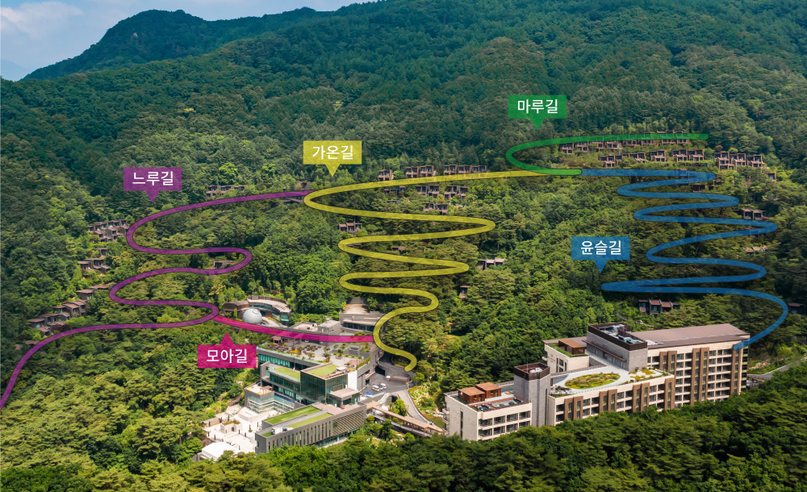
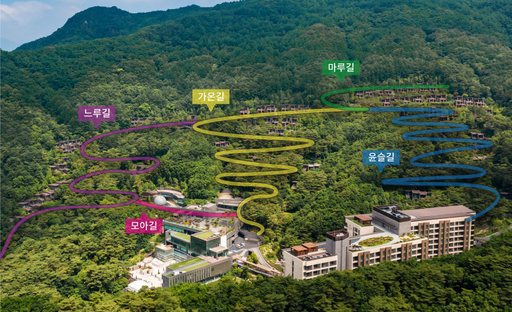

소개
| 컨셉 | 단지안내 |
대자연에 둘러싸인 프라이빗 산장 빌라
포레스트 리솜에는 곧은 길이 없습니다. 자연 그대로의 모습을 느낄 수 있도록 평지가 아닌 산속에, 쭉 뻗은 넓은 길이 아닌 오솔길 위에 길을 얹어 두었습니다. 포레스트 리솜의 산책로를 따라 걸으며 마음의 여유와 건강을 되찾아보세요.

| 컨셉 | 단지안내 |
포레스트 리솜에는 곧은 길이 없습니다. 자연 그대로의 모습을 느낄 수 있도록 평지가 아닌 산속에, 쭉 뻗은 넓은 길이 아닌 오솔길 위에 길을 얹어 두었습니다. 포레스트 리솜의 산책로를 따라 걸으며 마음의 여유와 건강을 되찾아보세요.
